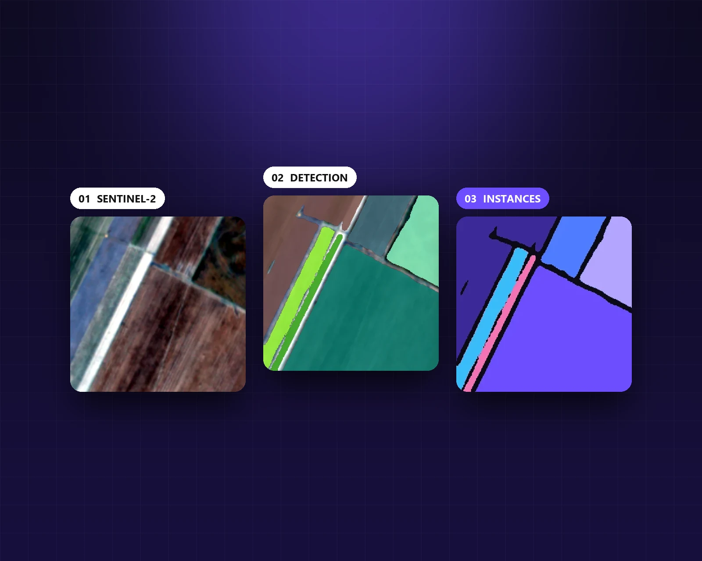
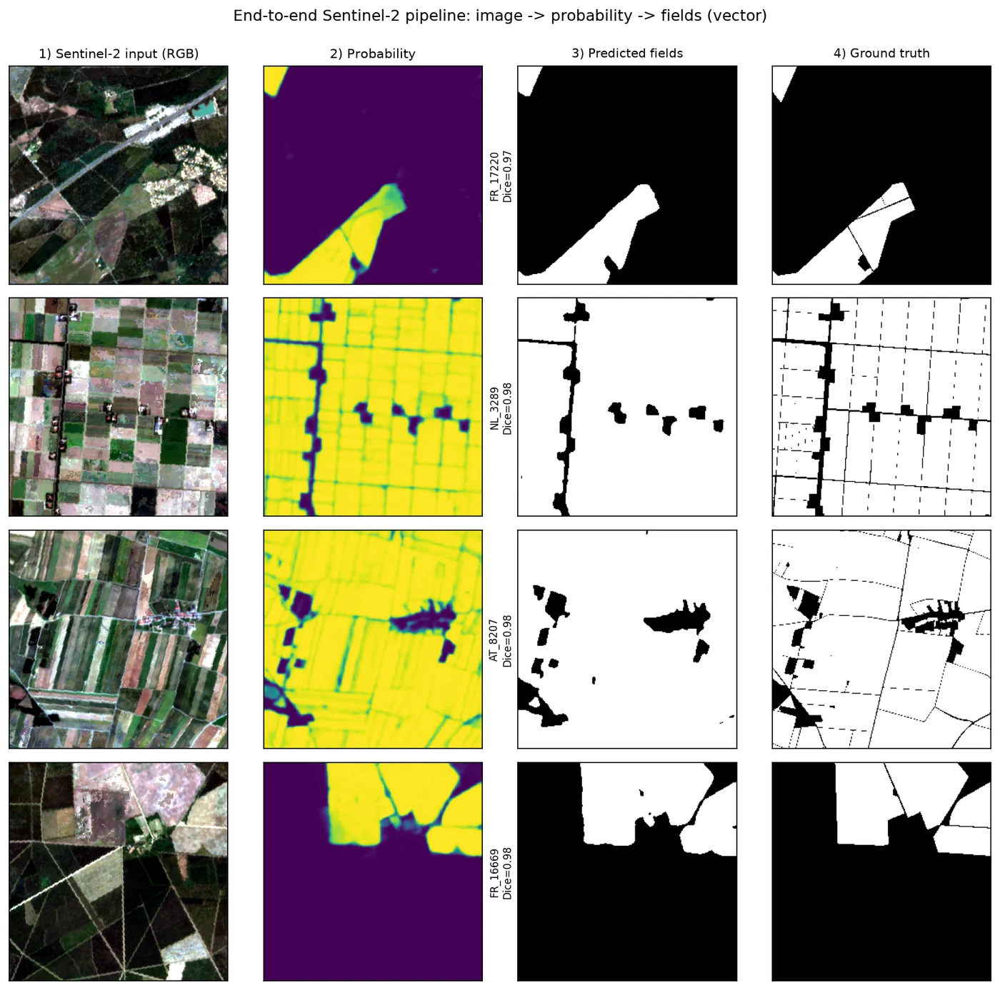
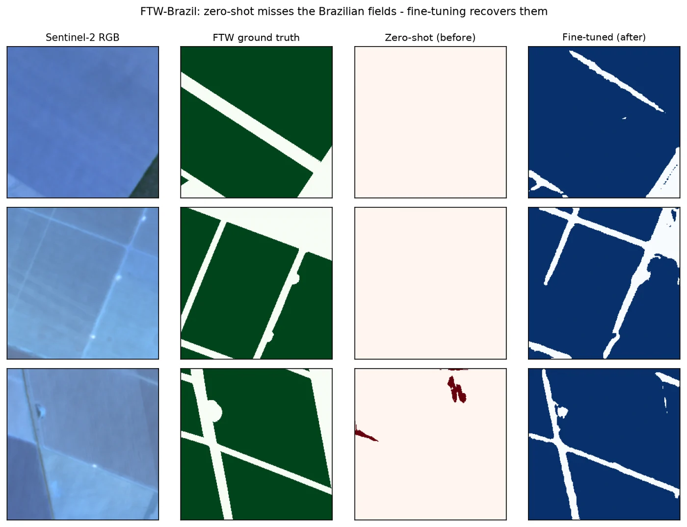
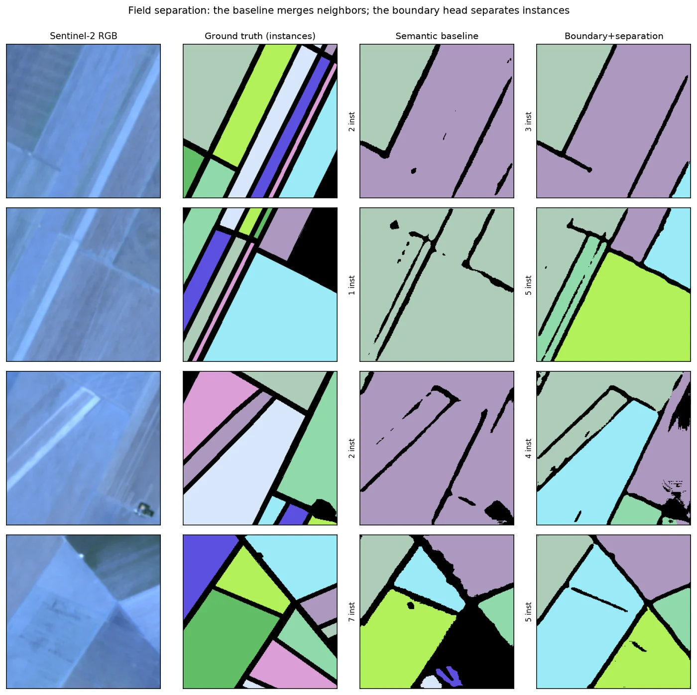
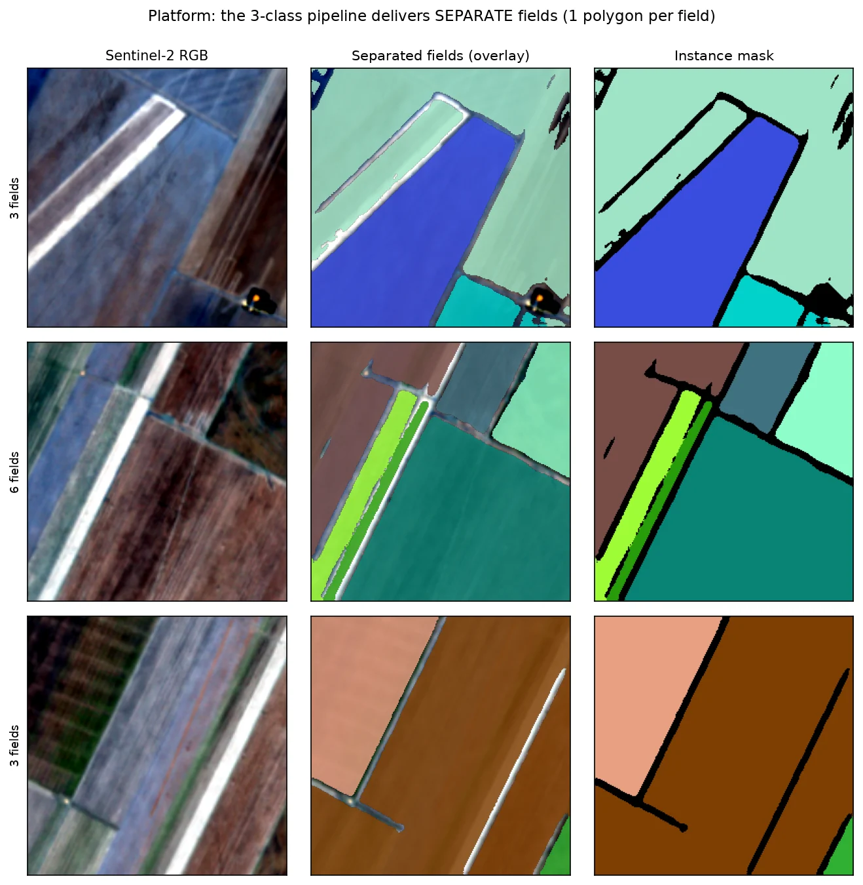

Multitemporal instead of RGB
I tried segmenting a single RGB image and gave up: color and texture change too much from one scene to another. With 6 dates, the model follows the crop cycle.
Thesis · Applied AI · PUCPR · 2026
My undergraduate thesis: a deep learning pipeline that finds every field in multi-date Sentinel-2 imagery and delivers the polygons in a web platform.
Thesis title: Automatic Segmentation of Agricultural Field Boundaries with Deep Neural Networks and Multitemporal Sentinel-2 Imagery

Drawing field boundaries by hand takes a lot of work. I wanted to automate it using only free satellite imagery and an ordinary computer.
A field is the basic unit of a farm: planting, spraying and harvesting are all planned around it. In my thesis, I built the full path, from the Sentinel-2 image (10 m, free) to polygons with their area in hectares, and validated everything on a public benchmark so anyone can reproduce it.
Six Sentinel-2 dates with bands B2, B3, B4, B8 and NDVI, 30 channels in total. This way the model sees the crop change over time, not just its color on a single day.
U-Net, DeepLabV3+ and U-Net++ with ResNet-34/50 encoders. Predictions are combined and reinforced with TTA (flips).
Threshold and minimum area calibrated on the validation set. Then the mask is turned into polygons with Rasterio and Shapely.
A 3-class model (interior, boundary and background) separates neighboring fields that plain segmentation would merge.
A GeoJSON with one polygon and its area in hectares for each field, served by a web platform with a map.

In Europe the model did very well. In Brazil, without fine-tuning, it barely saw the fields.
The model was trained on AI4Boundaries, a European dataset. On the Fields of The World benchmark (Brazil), Dice dropped to about 0.25. I fine-tuned it with a small amount of local data and it went back up to 0.72. The lesson: recognizing fields depends heavily on the region and the sensor, and adapting a model is much cheaper than training a new one from scratch.
Mean Dice, from 0 to 1

Getting the pixels right is not the same as finding the fields.
Dice measures area. But users need each field as a separate polygon, and plain segmentation merged neighboring fields. So I trained a 3-class model (interior, boundary and background) and evaluated it field by field, on 653 test fields.
Object F1 (IoU ≥ 0.5), from 0 to 1
Panoptic Quality, from 0 to 1

Then it became a product: you draw an area on the map and get the fields back.
The frontend, in React with Leaflet, receives the drawn area. The backend, in FastAPI, downloads Sentinel-2 L2A imagery via STAC (no login needed), runs the 3-class model with a sliding window and TTA, and returns one polygon per field with its area in hectares. Fetching the 6 dates and running the model takes 30 to 60 seconds.
I also deployed the solution at IoTag as a university extension project. Five professionals from engineering, data science and DevOps rated the tool 4.6 out of 5 on average for usefulness and accuracy.

I tried segmenting a single RGB image and gave up: color and texture change too much from one scene to another. With 6 dates, the model follows the crop cycle.
Band and date order and the percentile normalization (2 to 98) are the same in training and inference. I found that a wrong order zeroed out the predictions, so I fixed it and made the code check for it.
I used the official FTW split. I calibrated only on validation and computed the final metrics on 188 test tiles the model had never seen, with 95% confidence intervals and effect size (Cohen's d).
I trained on a GTX 1650, in fp32 (fp16 produced NaN) and with a small batch size. It took effort, but it worked.
Very small fields (under 5% of the tile) are still the weak spot, with Dice between 0.18 and 0.49. Large and medium fields stay between 0.70 and 0.93. As next steps, I want more examples of small fields, higher-resolution imagery and a comparison with foundation models such as SAM.